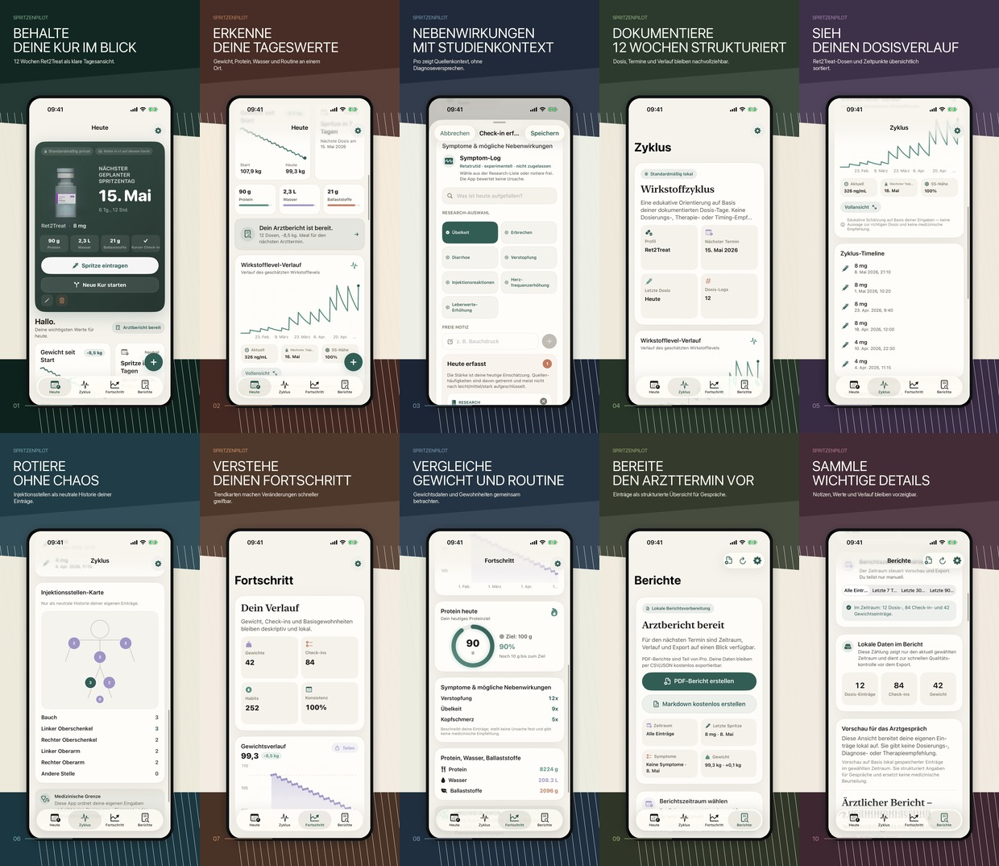

Spritzentag im Blick
Dokumentiere Datum, selbst eingetragene Dosis, Injektionsstelle und Notizen in einer konsistenten Historie.
GLP Kompass hilft dir, deine eigene GLP-1 Routine strukturiert zu dokumentieren: Spritzentage, selbst eingetragene Dosis-Historie, Injektionsstellen, Gewicht, Tageswerte, Erinnerungen, Export und PDF-Arztbericht.
7 Tage testen, danach Abo erforderlich. Lokale Speicherung in dieser Version. Kein Account. Kein Werbe-Tracking. Kein eigener Server für Journal-Einträge.

Die App ist als ruhiges Journal gebaut, nicht als Diätplattform und nicht als medizinischer Coach. Sie zeigt deine eigenen Eingaben strukturiert an, damit du deine Routine besser nachvollziehen und Termine besser vorbereiten kannst.
Dokumentiere Datum, selbst eingetragene Dosis, Injektionsstelle und Notizen in einer konsistenten Historie.
Halte Gewicht, Protein, Wasser, Ballaststoffe, Appetit, Symptome und Tagesnotizen fest, ohne eine komplette Kalorien-App zu nutzen.
Erstelle Exporte und PDF-Berichte aus deinen Einträgen, damit wichtige Punkte für den nächsten Termin nicht in Einzelnotizen verschwinden.
GLP Kompass ist kein Medizinprodukt. Die App stellt keine Diagnosen, empfiehlt keine Medikamente, berechnet keine Dosierungen, bewertet keine Symptome als medizinische Handlungsempfehlung und ersetzt keine ärztliche Beratung.
Welche Einträge sind für ein privates GLP-1 Journal sinnvoll, wo liegen die medizinischen Grenzen und wie bleibt die Dokumentation übersichtlich?
GLP Kompass ist im App Store verfügbar. Die App kann 7 Tage getestet werden; danach ist für die weitere Nutzung ein aktives GLP Kompass Pro Abo erforderlich.